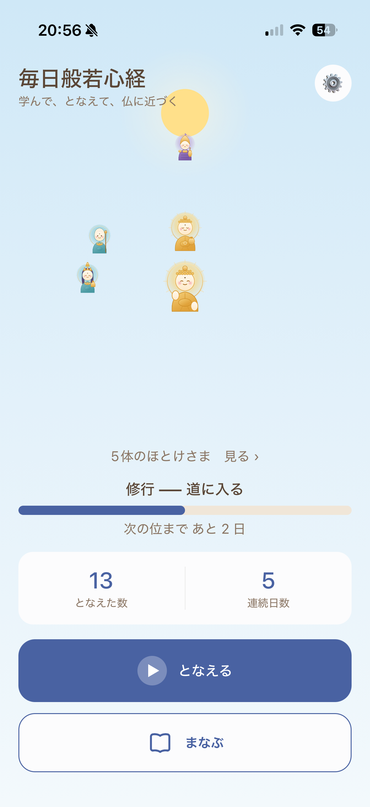
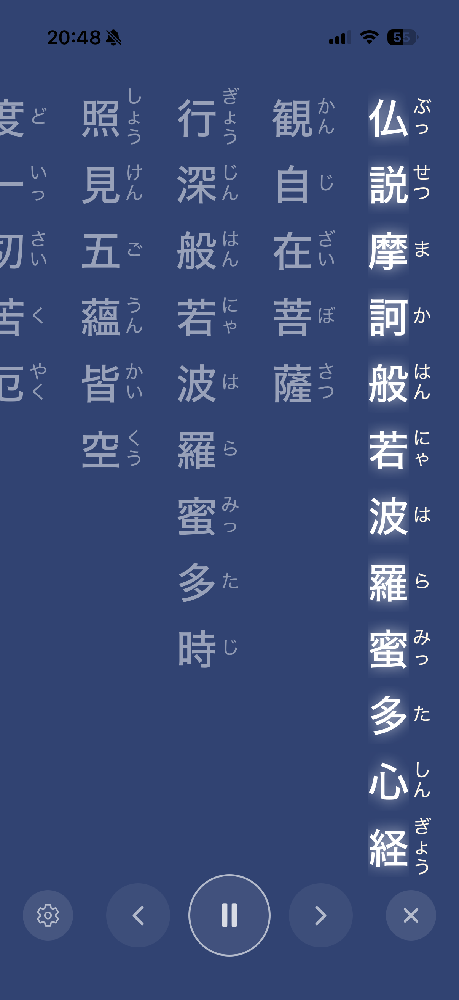
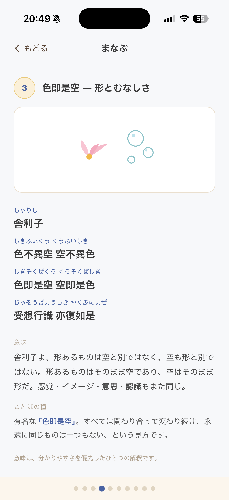
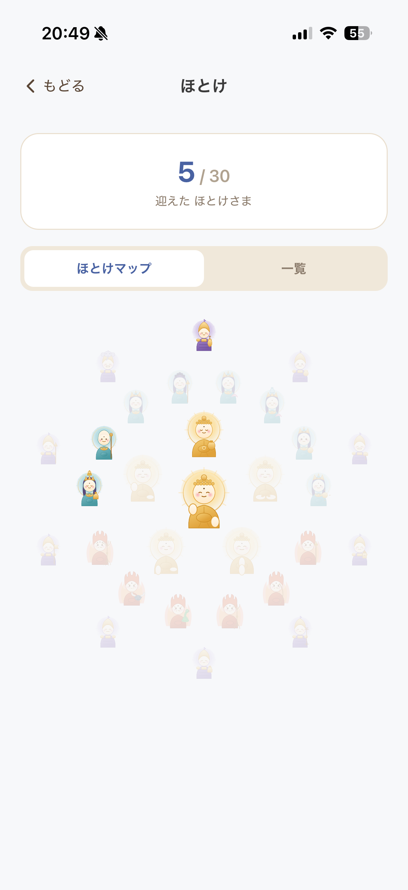

3つのことを、毎日すこしずつ
全文を9つの場面に分けて、現代語の意味とふりがなで。意味から無理なく入れます。
お手本の声に合わせて、縦書き＋ふりがなでなぞれます。速さも文字も自由に。
となえた日数で位が上がり、個性豊かな仏さまが少しずつ集まります。
縦書き＋ふりがなで、いまの一句が中央にハイライト。目で追いながら、無理なくお経をなぞれます。文字の大きさや読む速さは自由に調整でき、慣れてきたら暗唱モードで少しずつ覚えていけます。

「むずかしい」と思われがちな般若心経を、現代語の意味とふりがなつきでやさしく解説。「ことばの種」で大切な言葉の由来も紹介します。はじめての方でも、意味から入れます。

となえた日数に応じて位が上がり、仏さまがあなたのもとへ。カレンダーには続けた日が花になって残り、連続日数もひと目で。毎日つづける、やさしい後押しになります。

こんな方に
よみもの